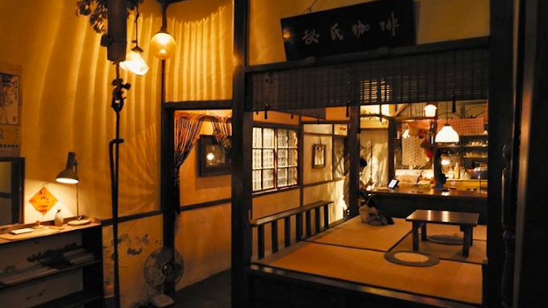

Morikoohii 森 咖啡 |
|
嘉義最為人知的景點就是阿里山了，嘉義阿里山因為風景優美林業興盛，造就了嘉義市林業之都的美名，現在阿里山腳下就有一座經歷林業興衰的歷史建築「檜意森活村」。一座以阿里山檜木打造的日式建築聚落，它曾經是日治時代阿里山林業開發所建立的官方宿舍，現在經過地方的努力與修建，成為一座城市中充滿悠閒、藝術、人文的休憩場所，平日是嘉義人散步放鬆的好去處，假日更是遊客聚集的熱門景點。「Morikoohii森咖啡」就在這個充滿日式氛圍的環境中誕生，一間有故事的咖啡館。 園區就緊鄰著林森西路、忠孝路，離嘉義市政府僅有3分鐘車程，實在很難想像在車水馬龍的嘉義市區會有一處規劃這麼完善的景點。森咖啡從外觀就很吸引人，大樹下戶外陽傘檜木椅，和點著復古燈具的門口，上頭高掛著金色字體 「Morikoohii」許多人都被眼前的美景吸引停下腳步不停往裡面望去，不只是網美們喜歡，也是許多情侶們約會的好地方喔。 Morikoohii其實是日文的Mori（森林）加上Koohii（咖啡），象徵著在檜木森林裡品嘗好咖啡的意境。走進森咖啡像是發現新大陸一樣的心情，右邊靠窗座位區半隱密的巧妙間隔，適合在這手牽手談情說愛。 |
 |
Hit Cat Café 打貓咖啡 |
|
檜意森活村出現餐飲新亮點，在綠茵環繞的T22A木造老屋裡，可以喝精釀啤酒、好咖啡、還有美味的手作酸種麵包可以品嚐，「打貓咖啡」雖然餐飲品項不是特別多，但幾乎每一樣都端出優秀品質。經營高爾夫球桿事業從民雄起家的啟坤科技，因老闆對美酒佳餚有獨特的偏愛與品味，2019年代理澳洲B.V.B精釀啤酒，成立餐飲事業部，並在民雄開了名為「打貓廚房」的美式餐酒館。2023年6月，將餐飲事業觸角伸進嘉義市區，希望分享品牌理念給更多消費者。店內所有咖啡豆都由專業烘豆師代烘，啟坤科技老闆更重金買下高階義式咖啡機，以確保咖啡出杯品質。多數咖啡館都以甜點搭配咖啡茶飲，打貓咖啡想分享不一樣的餐飲文化，推薦大家嚐試用麵包搭配咖啡，或很Chill的來一瓶精釀啤酒，在美好的木都下午，感受最純粹的食物風味。 |
.jpg) |